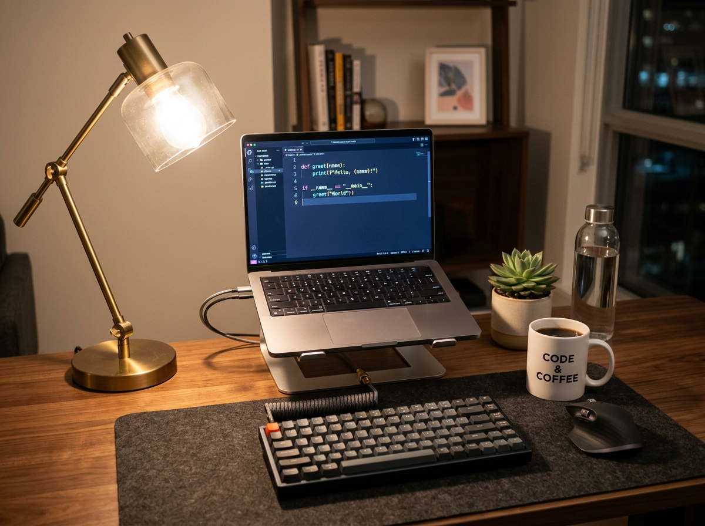

Über mich
Herzlich willkommen auf meiner persönlichen Webseite! Mein Name ist Felix Pfragner und ich interessiere mich leidenschaftlich für Informationstechnologie, moderne Softwareentwicklung und kreatives Webdesign. Im Rahmen des Moduls IT-20 Web-Grundlagen vertiefe ich mein Wissen rund um semantisches HTML, strukturiertes CSS und interaktive Webanwendungen.
Technologie begeistert mich besonders dann, wenn durch sauberen Programmcode ansprechende und intuitive Lösungen entstehen. Am liebsten tüftle ich an Projekten, die Funktionalität mit einem modernen Design verbinden.

Mein digitaler Entwickler-Arbeitsplatz für neue Coding-Ideen.
Meine Hobbys & Interessen
In meiner Freizeit widme ich mich verschiedenen technischen und kreativen Projekten. Hier sind drei Bereiche, die mir besonders viel Freude bereiten:
💻 Webentwicklung
Erkunden neuester Webstandards, Ausprobieren moderner CSS-Layouts und Entwickeln praktischer Tools mit JavaScript und Frameworks.
⚙️ Hardware & PC-Bau
Zusammenstellung und Bau individueller PC-Systeme, Heimnetzwerk-Konfiguration und Optimierung von Hardware-Komponenten.
📸 Medien & Design
Digitale Bildbearbeitung, Entwerfen nutzerfreundlicher Interfaces und das Finden harmonischer Farb- und Typografiekonzepte.
Aktuelle Lernziele & Schwerpunkte
Folgende Kernkompetenzen und Themenbereiche stehen aktuell im Mittelpunkt meiner praktischen Arbeit:
- Erstellung semantischer, barrierefreier und strukturierter HTML5-Dokumente
- Gestaltung anpassungsfähiger Layouts mit modernem CSS (Flexbox, CSS-Variablen und Media Queries)
- Schrittweise Vertiefung in clientseitiges JavaScript für interaktive Nutzererlebnisse
- Versionsverwaltung und strukturierte Zusammenarbeit mit Git und GitHub
Kontakt aufnehmen
Haben Sie Fragen zu meinen Arbeiten oder möchten Sie sich über spannende Web-Projekte austauschen? Ich freue mich über jede Nachricht und konstruktives Feedback zu meinen Fortschritten im Modul IT-20.
📫 Erreichbarkeit: Direkt über das Schulportal oder über mein offizielles GitHub-Repository zur Aufgabe.